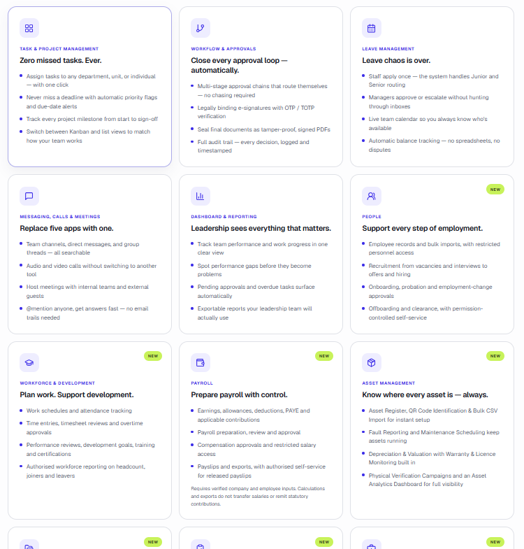

A workflow and productivity platform for government institutions, built from discovery with the people who run on paper.
Role
Product manager, sole PM
When
September 2025 to present
Team
Lean: product, engineering, design, operations
Status
Live with a pilot ministry, 9+ modules
17departments in the pilot ministry, with several units under each
236users on the platform
< 3 mofrom discovery to a working MVP
9+modules live today, from a four-module MVP
The problem
Ministry work ran on physical files and in-person presence. Approvals took weeks to months and stopped when the right person was not in the building.
What I did
Led discovery with the staff, led the pivot from a generic workflow tool to a GovTech platform, and defined an MVP small enough for paper-based users to adopt.
What happened
A state ministry signed as the first institutional client, and the platform grew from four modules to nine or more, all live.
ProblemWhat was broken
Administrative work that depended on who was in the room
Government ministries ran their administrative systems on physical documentation and in-person presence. A memo needed specific people at specific desks at each stage.
Slow
Memo approval cycles took weeks to months, even for routine approvals.
Fragile
Processes stopped entirely when a key approver, including executive signatories, was not physically present.
Invisible
No one could see where a submission sat in the chain, and there was no standard escalation or delegation.
Unaccountable
Documents lived mostly on paper, with a risk of loss and misfiling, and no audit trail.
Processes were not just slow. They stopped entirely when the right person was not physically in the building.The finding that shaped the product
DiscoveryHow I found the real problem
Discovery changed what we were building
Promellon began as a broad workflow product. I ran a structured discovery with the pilot ministry, combining three methods:
Stakeholder interviews with dozens of staff across the ministry, from junior staff to senior officials.
Direct observation of how memos moved, and where they stalled.
Workflow process mapping to capture the approval structures the ministry already used.
Discovery narrowed a broad vision into a specific, urgent problem. Ministries were the highest-pain, most underserved opportunity I found: an acute problem, few alternatives built for how these institutions work, and many ministries that share the same structure, which supports a land-and-expand model.
The pivot
I led the move from a generic workflow tool to a GovTech platform. The decision came from the research, not from assumption. It changed Promellon's positioning and led to its first institutional client.
Who I designed for
Persona
Role
Digital comfort
What they needed
The Initiator
Junior staff who create and submit memos
Mixed
Easy submission and real-time status
The Router
Middle management who review and forward
Low to moderate
Clear routing, no doubt about the next step
The Approver
Senior officials and directors
Low
Review key information fast and approve without friction
The Executive
Final sign-off
Low, little tolerance for complexity
Approve remotely and keep authority without being present
The two senior personas set the design rule for the whole product: extreme simplicity where decisions are made, and mobile approval for executives.
ScopeWhat shipped first, and what followed
Four modules first, then nine or more
The MVP was deliberately small. I cut it to four modules so users who were used to physical files could learn one familiar thing at a time. The modules I held back needed heavier architecture and the transfer of employee records, so they came later.
Shipped in the first MVP
Task and project managementAssign, track and report on work
Workflow and approvalsMulti-stage approval chains with e-signatures and an audit trail
Messaging, calls and meetingsTeam channels, direct messages and meetings
Leave managementRequest, approval and balances
Dashboard and reportingLeadership view of progress and pending approvals
PeopleEmployee records, recruitment, onboarding and offboarding
Workforce and developmentSchedules, attendance, timesheets and reviews
PayrollPayroll preparation, review and approval
Asset managementAsset register, maintenance and verification

Overview of the modules live today.
DecisionsOptions, reasons, trade-offs
Five decisions that shaped the product
Positioning
A generic workflow tool, or a GovTech platform
Chose
GovTech. Discovery showed a sharper pain, a clearer buyer and a land-and-expand path across ministries with the same structure.
Trade-off
A narrower market in exchange for a focused product and a first client.
MVP scope
Broad launch, or four familiar modules
Chose
Messaging, task and project management, workflow and approvals, and leave management. Users came from paper, so familiarity mattered more than breadth.
Trade-off
Payroll, people records and asset management waited. They needed more architecture work and the transfer of employee records.
Rules as configuration
Hardcode the ministry's rules, or make them configurable
Chose
Conditional routing, such as value thresholds that send a request down a different route, is built as configurable rules, not fixed values. The ministry's regulations can change.
Trade-off
More design effort up front. A full custom workflow builder was deferred to a later release.
Design for the least confident user
Optimise for power users, or for senior approvers
Chose
Minimal steps, clear labels and no assumed technical knowledge. Designed so executives can review and approve on a phone.
Trade-off
Fewer shortcuts for staff who are comfortable with software.
Adoption plan
Switch off paper, or run both
Chose
My PRD planned a parallel physical and digital period during the pilot, plus in-person onboarding for senior staff, to build trust before a full transition.
Trade-off
Duplicated effort for the pilot period.
How the team worked
On a lean team, ambiguity is expensive. I set up an alignment process across engineering, design and operations: shared goals, clear priorities and timelines at each sprint, and documented decisions. It kept the team delivering within the approved timelines. With institutional buyers, I also put a working demo in front of decision-makers early, because demos persuade where strategy decks do not.
SpotlightMemo submission and approval
The approval workflow, from the PRD
The hardest feature was the memo submission and approval workflow. I wrote its PRD (version 1.0, February 2026). Two paths mirror how the ministry already works:
Direct escalation
A fast path for urgent submissions, from the originating unit straight to executive review, with minimal steps in between.
Post-approval payment path
A six-phase procurement-to-payment workflow with conditional routing, document checkpoints, an audit pass or fail, and multi-actor sign-off.
Requirements that mattered most
Requirement
Priority
Why
Role-based routing that mirrors the ministry's structure
Must have
Adoption depends on the system matching the way people already work
Conditional routing on request value
Must have
A core decision gate that had to be automated
Required-document checklist at each checkpoint
Must have
Stops incomplete submissions from advancing
Audit fail loop with a reason and blocked resubmission
Must have
Incomplete submissions were a leading cause of audit failures
Real-time status for every actor
Must have
Removes the top complaint: not knowing where a submission is
Digital approval and e-signature for executives
Must have
Directly removes the physical-presence bottleneck found in discovery
Full, searchable audit log
Must have
Compliance and accountability
Stage SLA tracking and delegation to a proxy approver
Should have
Accountability, and cover when an approver is away
Targets I set
Metric
Baseline
Target
Memo approval cycle time
Weeks to months
Under 5 business days
Workflows completed without physical intervention
Not measurable on paper
Over 90%
Active users as a share of staff onboarded
0%
Over 70% within 90 days of launch
Submissions with a full audit trail
0%
100%
These are the targets I wrote into the PRD, not measured results.
Risks I planned for
Risk
Severity
Mitigation
Low digital literacy among senior approvers
High
Extreme simplicity at approver touchpoints and in-person onboarding
Resistance to leaving physical files
Medium
Run physical and digital in parallel during the pilot
Is click-to-approve enough for legal validity, or is a cryptographic signature required?
Does the payment-system integration belong in this release, or is a manual update acceptable for the pilot?
Who is the ministry's designated administrator for onboarding staff and assigning roles?
OutcomesWhat it led to
From discovery to a first institutional client
First institutional client
A state ministry signed on, which creates a repeatable route to other ministries.
Adoption at scale
17 departments, each with several units, and 236 users on the platform.
An MVP that earned attention
The early product was shown to senior leadership before full delivery, which helped build support for the platform.
A product that kept growing
From four modules at launch to nine or more, all live. I also represented Promellon at GITEX Nigeria, pitching the platform to government and private-sector clients.
Limits of this write-up
Client details are anonymised on purpose.
The PRD figures above are targets. Measured adoption and cycle-time results are not included here.
I am the sole product manager, but this was a team effort across engineering, design and operations.